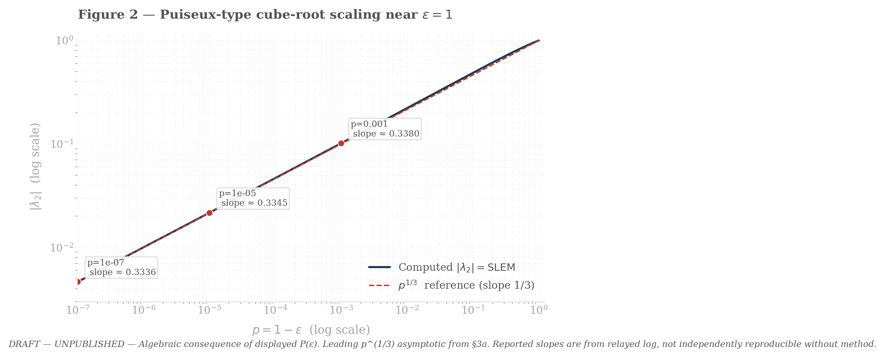
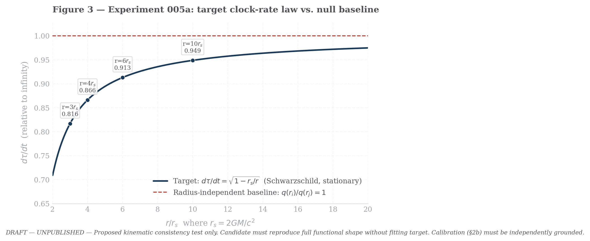
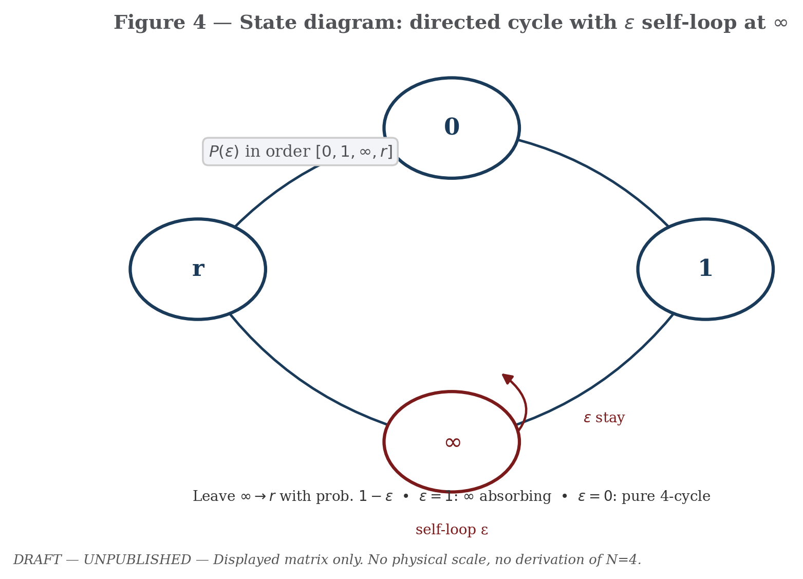
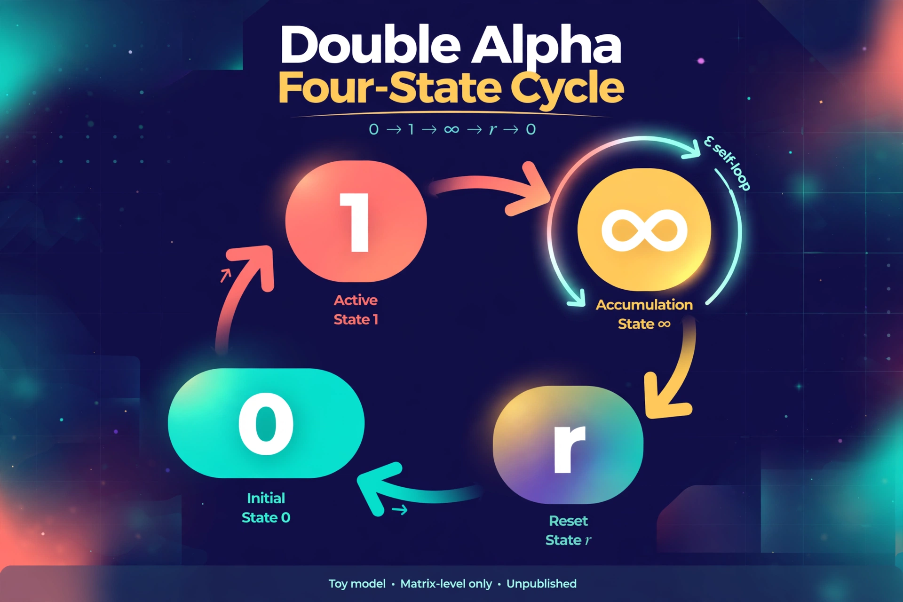
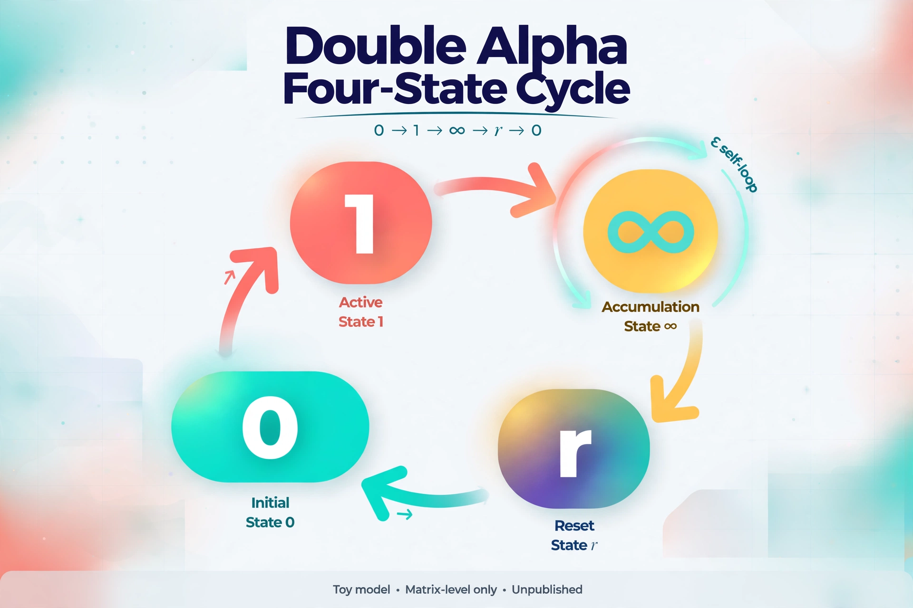

Hash file bytes
Compute SHA-256 per selected file in this browser, then hash a canonical JSON preview. The files are not uploaded.
CUP CRATE WORKFLOW // REVIEW BUILD 01
A small browser-only implementation sketch for making artifact versions visible, hashing file bytes, and recording a scoped choice without erasing the alternatives.
This is a showcase draft based on the CUP Crate working materials—not the protocol itself, a sealed crate, or a claim of formal conformance.
The source repository describes its protocol as DRAFT / PROPOSED, not SEALED, and says nothing there is currently sealed. This page keeps that boundary visible; it does not promote a proposal into a verified release.
How to read this page: the browser tools demonstrate limited local behaviors; the figures and Time Sphere drawings are separate review material. Section labels mark the limits for each item. Inclusion here is not validation, formal CUP conformance, or scientific evidence.
WHAT THIS DRAFT DOES
Small tools with a deliberately narrow claim.
Compute SHA-256 per selected file in this browser, then hash a canonical JSON preview. The files are not uploaded.
Keep small UTF-8 text snapshots under one logical artifact as separate, named local records. No automatic merge is provided.
Record which named state a user selected for a labeled run. This records a choice; it does not execute or validate that run.
[02] / OWNER-SUPPLIED ARTWORK
These four supplied images are included without altering their bytes. Captions describe the figures as presented; this package has not independently validated their derivations, calculations, calibration, or physical interpretation.
For this review, the gallery makes visible how owner-supplied candidate material is kept distinct from the browser tools; its inclusion does not mean the tools use, validate, or depend on these figures.
DRAFT — UNPUBLISHED · CANDIDATE FIGURES · NOT INDEPENDENTLY VALIDATED HERE

Depicts Proposition 1 at matrix level, conditional on the displayed P(ε). The supplied caption says the ε = 1 endpoint is not a physical optimum and the plot is not a physical prediction. Values and derivation were not independently recomputed for this package.

Depicts a proposed p^(1/3) comparison near ε = 1. The supplied caption describes the scaling as an algebraic consequence of a displayed matrix and says the reported slopes came from a relayed log, not an independently reproducible method. This package has not reproduced those slopes.

Shows a proposed kinematic consistency-test target against a null baseline. The supplied caption says a candidate must reproduce the full functional shape without fitting the target and that calibration must be independently grounded. No experiment or calibration was run for this package.

Depicts the supplied four-state transition diagram, including an ε self-loop at ∞. The image itself says it is matrix-only, has no physical scale, and does not derive N = 4. This caption does not assert such a derivation.
[03] / BYTE-LEVEL PREVIEW
Choose local files to calculate a SHA-256 digest for each byte sequence, then a digest for this page’s canonical JSON preview. This is a convenience for review—not a CUP seal.
Select local files and create a preview. File bytes are read in this browser and are not sent to a server.
The preview digest covers this draft’s canonical JSON representation. The file digests cover the selected file bytes. This page does not collect the sealer identity, time, tool, environment, story, dependencies, or owner decision required for the repository’s broader seal workflow.
[04] / PRESERVE, NAME, CUT
This little workbench stores text snapshots locally so you can see the fork/cut distinction. Snapshot bytes mean UTF-8 bytes of the textarea value; they are not copies of external files.
Your named states will appear here. Add two with the same logical artifact name to see a fork.
Comparison will appear here. Both versions remain available; there is no automatic merge button.
A local cut record names one existing state and one run label. It does not establish that the run happened.
[05] / EXECUTABLE PAGE CHECKS
These browser checks exercise a few functions used by the page. Passing them is not protocol verification or a security seal.
Not run yet.
[06] / BOUNDARIES
A SHA-256 digest can help compare bytes to a previously recorded digest. It does not prove who created the bytes, that every file was included, or that a run is correct. Local storage can be edited, removed, or lost. Keep independent copies of any important receipt.
[07] / SUPPLEMENTARY CANDIDATE VISUAL
This additional owner-supplied visual is kept separate from the matrix-level state diagram above.
TOY MODEL · MATRIX-LEVEL ONLY · DRAFT / UNPUBLISHED

The image labels itself a toy model, matrix-level only, and unpublished. It shows an ε self-loop at ∞ but does not explicitly label the exit from ∞ with probability 1−ε; it is illustrative, not a complete specification of P(ε). No independent validation was performed here.
[08] / VISUAL VARIANT
A separate candidate rendering of the same toy cycle, kept alongside the darker version rather than substituted for it. Both are retained so a reviewer can compare their visual presentations; this page records no selected preference.
DRAFT / UNPUBLISHED · ALTERNATE VISUAL · NOT INDEPENDENTLY VALIDATED

This image also shows an ε self-loop at ∞ without explicitly labeling the exit with probability 1−ε. It is illustrative, not a complete specification of P(ε); no independent validation was performed here.
[09] / TIME SPHERE · WORKING VIEW
This interactive diagram explores a working distinction. Its sphere-like drawing is a schematic interface choice—not physical geometry or a scientific model.
DRAFT / PROPOSAL · UNPUBLISHED · NOT A PHYSICAL MODEL
WHAT ISAll that is.
NOWA distinction within it.
Working definitions; meanings remain open.Highlight: point C of 5. No event or time measurement is recorded.
The order cue is a reading aid only; it does not assert a physical direction or rate.
[NEXT CUT] / STONE-IN-WATER IMAGE
The stone-in-water image is intended here as circles from one moment, not a hierarchy. This second sketch sits beside the sphere view rather than replacing it; whether the two views describe the same thing remains open.
DRAFT / INTERPRETIVE IMAGE · NOT A PHYSICAL MODEL
INTENDED MEANINGCircles from one moment, not a hierarchy.
DRAWING CHOICE (INFERENCE)Unranked contours around one marked center.
LEFT OPENWhether this image and the sphere sketch are one view or two distinct readings.
Artifact evidence: the working draft What Is and Now gives the two definitions above and describes a conversation as words in sequence that also occupy positions on a screen. It holds “how” and “where” aside.
Proposal choices (inference): the sphere-like drawing, five marks, movable highlight, and optional order cue are interface choices to make that distinction inspectable. They are not specified or established by the source draft.
Not imported: a separate archived Spiral Time Sphere page includes equations and physical/quantum interpretations. This proposal does not reproduce or validate those claims.
What this interaction does not establish: physical geometry, a theory of time, a quantum state, an external “Now,” or a scientific result. Moving the highlight changes only this page’s display.